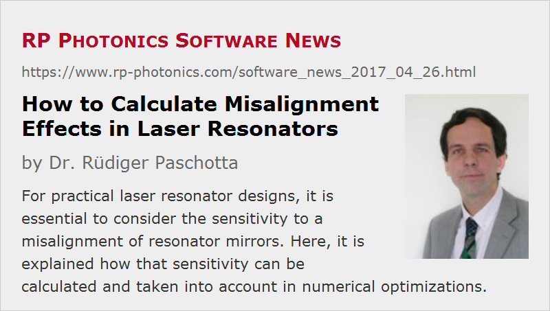

How to Calculate Misalignment Effects in Laser Resonators
Posted on 2017-04-26 in the RP Photonics Software News (available as e-mail newsletter!)
Permanent link: https://www.rp-photonics.com/software_news_2017_04_26.html
Author: Dr. Rüdiger Paschotta, RP Photonics Consulting GmbH
Abstract: For practical laser resonator designs, it is essential to consider the sensitivity to a misalignment of resonator mirrors. Here, it is explained how that sensitivity can be calculated and taken into account in numerical optimizations.

Resonator designs are often analyzed under the assumption that the resonator will be perfectly aligned. However, it is often important to analyze misalignment effects as well – particularly when developing commercial products.
Some Basics
The most important type of misalignment is a deviation of the angular orientation of a mirror from its nominal position. That can easily result not only from actively turning a screw at a mirror holder, but also due to thermal effects. Particularly for lasers with relatively large mode areas, tiny angular misalignments can lead to substantial effects. Essentially, the resonator modes will move away from their normal position such that they again hit the end mirrors in an exactly perpendicular fashion. (I am always assuming a linear resonator here, which is most common.) Even if the modes stay far enough away from the edges of all mirrors, so that diffraction losses at those edges are avoided, the problem is usually that the overlap between pump beam and laser beam in the laser crystal is reduced. That will then not only reduce the output power, but often also degrades the beam quality.
Optimization Matters
Interestingly, the alignment sensitivity of a laser resonator can sensitively depend on various parameters, and it can vary strongly e.g. when the operation point is changed via the thermal lens of the laser crystal. Typically, a linear resonator has two stability zones, and the alignment sensitivity can be very different in those two; there is even a divergence of alignment sensitivity at one of the four stability edges, and it is certainly not advisable to operate a laser near to such a point.
You see that the alignment sensitivity really depends on the design, not just on a few basic parameters like resonator length and mode size.
Calculation Methods
For simple resonators, it is not too difficult to calculate the resulting shift of the beam position based on simple geometric considerations. However, that will soon become rather inconvenient e.g. if one has several curved mirrors and/or thermal lensing in the laser crystal. The natural solution is that the software used for the resonator design calculates not only beam radii, but also such misalignment effects. In the following, I briefly explain how that works.
For beam radius calculations only, one usually uses so-called ABCD matrices. These have originally been designed for purely geometric considerations in ray optics, and later found to be very useful for wave optics as well: such a matrix cannot only be applied to geometric vectors, but also used for propagating the so-called complex q parameter of a Gaussian beam which carries the information on beam radius and wavefront curvature of such a beam.
This is not enough for misalignment calculations, however. For that purpose, the method had to be extended: one can use a so-called ABCDEF matrices (O. E. Martínez, “Matrix formalism for dispersive laser cavities”, JQE 25 (3), 296 (1989)), containing two additional parameters E and F related to the misalignment apart from a few constant components. One can apply such 3×3 matrices to geometric 3-component vectors containing beam offset, beam angle and a “1” as third component in order to propagate the misalignment through a whole resonator. Further, one can then calculate an eigenvector which is reproduced after one resonator round trip; this gives the mode position under the condition of misalignments.
I just tell you that the technical details are very complicated. I remember having spent many hours with very sophisticated work, partly due to the mistakes in the equations in the above mentioned paper. When this finally worked, I used it for only one published paper (J. Opt. Soc. Am. B 17 (4), 646 (2000), doi:10.1364/JOSAB.17.000646). However, the software nevertheless became very useful later on – not for the original purpose, but for general resonator design issues. It finally evolved into the software RP Resonator, for which RP Photonics is now selling user licenses.
Wavelength-dependent Beam Positions
The described method can also be applied to effects of wavelength-dependent refraction. Consider, for example, a prism pair for dispersion compensation in a mode-locked laser. Here, each wavelength component of the circulating ultrashort pulse has a slightly different beam position in part of the resonator, and the resulting wavelength-dependent path length produces chromatic dispersion. For simple prism pairs, one can use certain formulas for calculating the resulting dispersion, but it is nice if the software can calculate such effects for arbitrary resonators. One can, for example, then also take into account refraction effects at Brewster interfaces.
No Problem with the Right Software
When you have the software RP Resonator, calculating misalignment effects becomes quite easy. It just requires two things:
- For those resonator mirrors which are misaligned, specify the angular error with the additional parameter delta_t for the tangential direction or delta_s for the sagittal direction.
- Use the functions d_t() and d_s() e.g. to plot the tangential and sagittal beam offset from the nominal beam position as a function of the z position. (There are also functions da_t() and da_s() for the angular offsets.)
Below you see an example of such a plot (see the dashed black curve) for a typical laser resonator. The alignment sensitivity diverges at the left stability edge, and is much smaller in the right stability zone. In practice, you would find that the resonator is very hard to align for low pump powers. In other cases, it is the other way round, e.g. with diverging alignment sensitivity as the pump power increases. Obviously, you want to know that before you decide to build a resonator!
You can use such functions not only for plots. For example, for the numerical optimization of the resonator design you can define a figure-of-merit function containing the alignment sensitivity. Essentially, you can tell the software that you don't like deviations of mode radii from certain values, but you also don't like the sensitivity of the beam position particularly in the laser crystal, resulting from misalignment. That way, you can often find resonator designs with a substantially lower alignment sensitivity.
This article is a posting of the RP Photonics Software News, authored by Dr. Rüdiger Paschotta. You may link to this page, because its location is permanent.
Note that you can also receive the articles in the form of a newsletter or with an RSS feed.
|  |
If you like this article, share it with your friends and colleagues, e.g. via social media:
These sharing buttons are implemented in a privacy-friendly way!